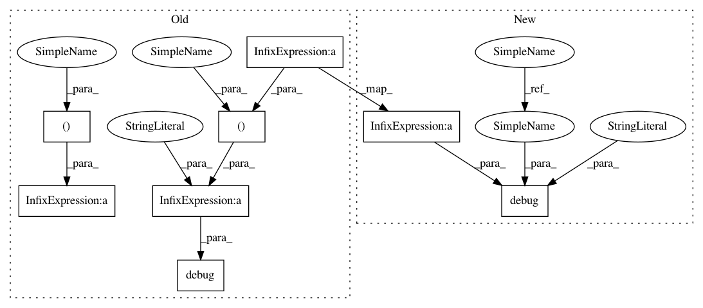

52e40cb89b5757b1616d3f561c75c36a3fd36674,examples/trials/ga_squad/trial.py,,run_epoch,#Any#Any#Any#,172
Before Change
loss, _, = sess.run(
[answer_net.loss, answer_net.train_op], feed_dict=feed_dict)
if count % 100 == 0:
logger.debug("%d %g except:%g, loss:%g" %
(count, used, used / count * len(batches), loss))
loss_sum += loss
else:
feed_dict = {answer_net.query_word: query,
answer_net.query_mask: query_mask,
answer_net.query_lengths: query_lengths,
answer_net.passage_word: passage,
answer_net.passage_mask: passage_mask,
answer_net.passage_lengths: passage_lengths,
answer_net.query_char_ids: query_char,
answer_net.query_char_lengths: query_char_lengths,
answer_net.passage_char_ids: passage_char,
answer_net.passage_char_lengths: passage_char_lengths}
position1, position2 = sess.run(
[answer_net.begin_prob, answer_net.end_prob], feed_dict=feed_dict)
position1_result += position1.tolist()
position2_result += position2.tolist()
contexts += context
ids = np.concatenate((ids, sample_id))
if count % 100 == 0:
logger.debug("%d %g except:%g" %
(count, used, used / count * len(batches)))
loss = loss_sum / len(batches)
if is_training:
return loss
After Change
timer = Timer()
count = 0
for batch in batches:
used = timer.get_elapsed(False)
count += 1
qps = batch["qp_pairs"]
question_tokens = [qp["question_tokens"] for qp in qps]
passage_tokens = [qp["passage_tokens"] for qp in qps]
context = [(qp["passage"], qp["passage_tokens"]) for qp in qps]
sample_id = [qp["id"] for qp in qps]
_, query, query_mask, query_lengths = data.get_word_input(
data=question_tokens, word_dict=word_vcb, embed=embed, embed_dim=cfg.word_embed_dim)
_, passage, passage_mask, passage_lengths = data.get_word_input(
data=passage_tokens, word_dict=word_vcb, embed=embed, embed_dim=cfg.word_embed_dim)
query_char, query_char_lengths = data.get_char_input(
data=question_tokens, char_dict=char_vcb, max_char_length=cfg.max_char_length)
passage_char, passage_char_lengths = data.get_char_input(
data=passage_tokens, char_dict=char_vcb, max_char_length=cfg.max_char_length)
if is_training:
answer_begin, answer_end = data.get_answer_begin_end(qps)
if is_training:
feed_dict = {answer_net.query_word: query,
answer_net.query_mask: query_mask,
answer_net.query_lengths: query_lengths,
answer_net.passage_word: passage,
answer_net.passage_mask: passage_mask,
answer_net.passage_lengths: passage_lengths,
answer_net.query_char_ids: query_char,
answer_net.query_char_lengths: query_char_lengths,
answer_net.passage_char_ids: passage_char,
answer_net.passage_char_lengths: passage_char_lengths,
answer_net.answer_begin: answer_begin,
answer_net.answer_end: answer_end}
loss, _, = sess.run(
[answer_net.loss, answer_net.train_op], feed_dict=feed_dict)
if count % 100 == 0:
logger.debug("%d %g except:%g, loss:%g", count, used, used / count * len(batches), loss)
loss_sum += loss
else:
feed_dict = {answer_net.query_word: query,
answer_net.query_mask: query_mask,
In pattern: SUPERPATTERN
Frequency: 3
Non-data size: 8
Instances
Project Name: microsoft/nni
Commit Name: 52e40cb89b5757b1616d3f561c75c36a3fd36674
Time: 2020-11-22
Author: 47351025+HarshCasper@users.noreply.github.com
File Name: examples/trials/ga_squad/trial.py
Class Name:
Method Name: run_epoch
Project Name: microsoft/nni
Commit Name: 52e40cb89b5757b1616d3f561c75c36a3fd36674
Time: 2020-11-22
Author: 47351025+HarshCasper@users.noreply.github.com
File Name: examples/trials/ga_squad/trial.py
Class Name:
Method Name: run_epoch
Project Name: microsoft/nni
Commit Name: 7c4b8c0d3d7d14c362892e44a1d256732d13a258
Time: 2019-10-29
Author: 40699903+liuzhe-lz@users.noreply.github.com
File Name: src/sdk/pynni/nni/bohb_advisor/config_generator.py
Class Name: CG_BOHB
Method Name: new_result
Project Name: microsoft/nni
Commit Name: 52e40cb89b5757b1616d3f561c75c36a3fd36674
Time: 2020-11-22
Author: 47351025+HarshCasper@users.noreply.github.com
File Name: examples/trials/weight_sharing/ga_squad/trial.py
Class Name:
Method Name: run_epoch